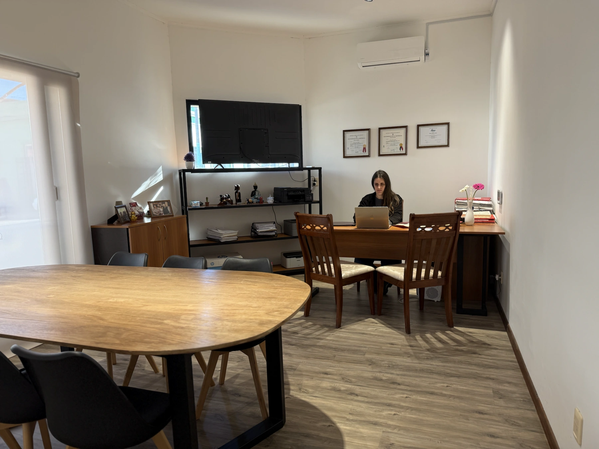
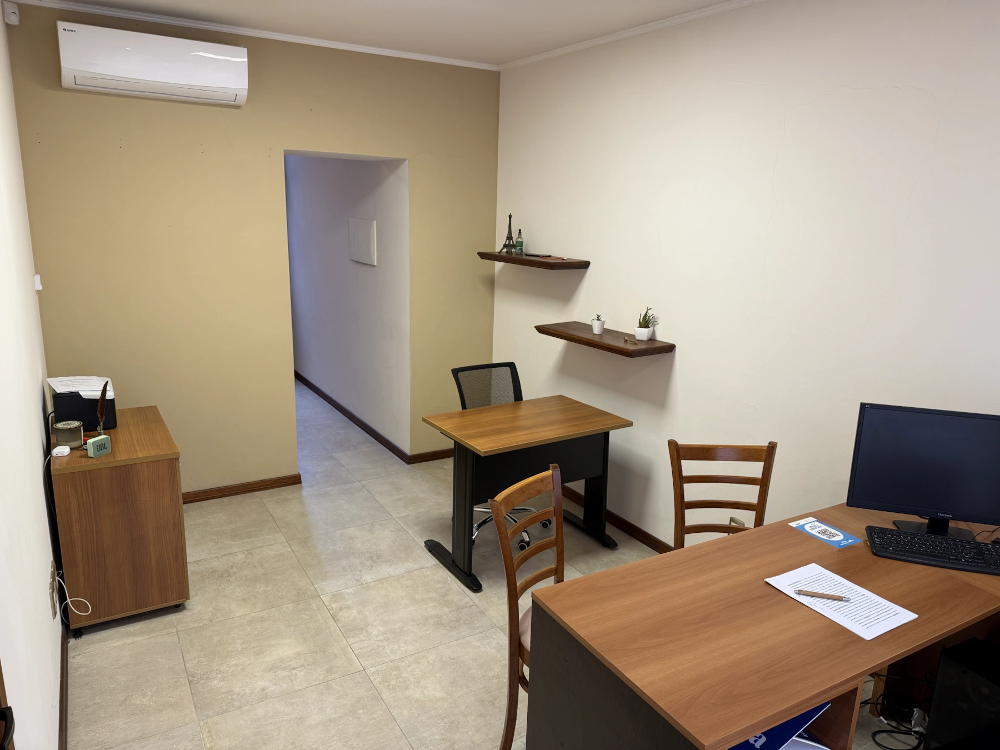
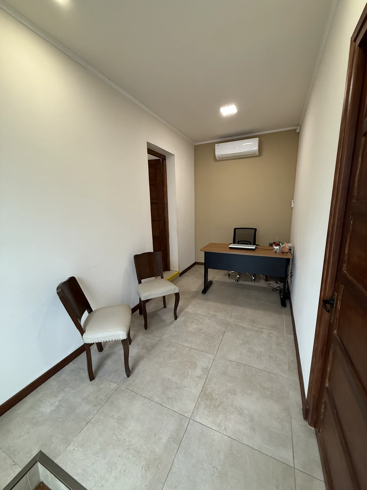
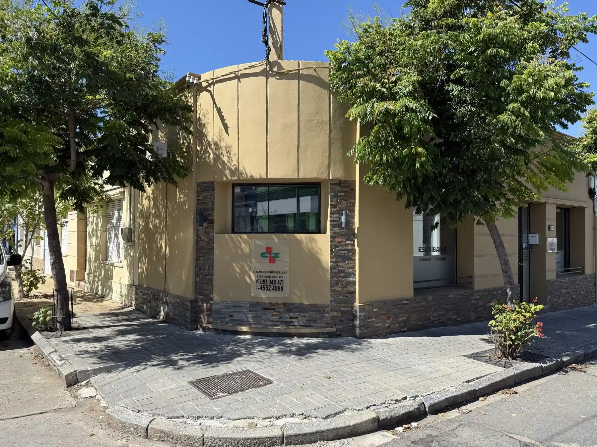

Títulos de automotores
Compraventas, transferencias, certificados, poderes y documentación vinculada a vehículos.
Reservar por automotor →El verdadero valor de mi profesión está en acompañar a las personas con cercanía, responsabilidad y confianza. Como Escribana trabajo para ofrecer seguridad jurídica y un asesoramiento claro, haciendo que cada cliente se sienta respaldado en cada decisión que tome.

Soy escribana pública y procuradora, egresada de la Universidad de la República en 2018.
Además soy rematadora, una formación que me permite acompañar operaciones vinculadas a la actividad inmobiliaria.
Brindo atención personalizada y acompaño a cada cliente durante las distintas etapas del trámite, incluidas las gestiones ante organismos públicos, instituciones financieras y registros.
Coordinar una consultaAtiendo asuntos personales, familiares, inmobiliarios, comerciales y patrimoniales, y sigo de cerca cada trámite de principio a fin.
Compraventas, transferencias, certificados, poderes y documentación vinculada a vehículos.
Reservar por automotor →Estudio de antecedentes, promesas, escrituras y acompañamiento durante todo el proceso de compra o venta.
Consultar por compraventa →Orientación y gestión notarial en procesos sucesorios, certificados y documentación relacionada.
Consultar por sucesión →Contratos de arrendamiento, garantías, inventarios, certificaciones y asesoramiento para propietarios e inquilinos.
Consultar por alquiler →Asesoramiento y acompañamiento documental en operaciones hipotecarias y trámites ante instituciones financieras.
Consultar por hipoteca →Certificaciones de firmas, poderes, autorizaciones, declaraciones juradas y certificados notariales.
Reservar consulta →Orientación notarial para documentar disposiciones personales y patrimoniales con claridad jurídica.
Solicitar entrevista →Constitución de sociedades, certificados, poderes y documentación relacionada con actividades comerciales.
Consultar por empresa →Asesoramiento general y gestiones ante registros, organismos públicos e instituciones.
Realizar una consulta →Los turnos tienen una duración estimada de 45 minutos y deben solicitarse con al menos 24 horas de anticipación.
La escribanía cuenta con espacios preparados para consultas y reuniones, en un entorno cómodo y reservado.




No es obligatorio. También se atiende por orden de llegada, pero se recomienda reservar para reducir tiempos de espera.
No. La solicitud queda sujeta a confirmación manual por parte de la escribanía.
Para urgencias o consultas del mismo día, comunicate por teléfono o WhatsApp al +598 91 048 471.
La documentación depende de cada trámite. Luego de coordinar la consulta, Eliana te indicará qué antecedentes necesitás presentar.
Sí. Se atienden compraventas, transferencias, certificados, poderes y otros trámites vinculados a vehículos.
Sí. Se redactan y revisan contratos de arrendamiento, garantías, inventarios y documentación relacionada.
Sí. Se pueden coordinar traslados y actuaciones en otras localidades, según el tipo de trámite y la disponibilidad.
Sí. Determinadas consultas y etapas de coordinación pueden realizarse por teléfono, correo electrónico o videollamada.
Sarandí 294 esquina 18 de Julio, Rosario, departamento de Colonia, Uruguay.